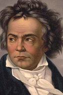
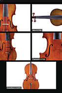

Related Resources
More Performing Arts on:
View the Full Season-at-a-Glance
- 
(Re)hearing Beethoven Festival
Nov. 20 - Dec. 17
A series of ear-opening encounters with all nine symphonies, presented in solo, duo and chamber versions.
Ran Dank and Soyeon Kate Lee, pianos
Dec. 12 at 8 PM
This duo performs Liszt’s transcription of Beethoven’s Symphony No. 9 in D Minor, op. 125 for two pianos
Christopher Taylor
Dec. 17 at 8 PM
Hear this virtuoso pianist in three Liszt transcriptions of Beethoven's symphonies.- 
Antonio Stradivari
Dec. 18 at 8 PM
An annual concert highlighting our "Strads," the gift of Gertrude Clarke Whittall.
The 2020-2021 season of Concerts from the Library of Congress: Virtually the best!
Our 2020-2021 season will be presented entirely virtually, through a freshly-conceived portal to our concerts, conversations, lectures and much more, available free of charge to everyone. In our 96th season, encountering unprecedented times and unpredictable challenges, we embark on an exciting venture: to share our concerts, and the Library’s magnificent music collections, with the greatest possible audience worldwide. New music and new media come together in a year that sees a mini-fest of Latinx composers and the world premieres of three new Library of Congress commissions. Two virtual residencies feature the JACK Quartet and violinist Jennifer Koh, visionary artists fired by a passion to reflect the rich diversity in our society and our music. (Re)Hearing Beethoven is a festive 250th birthday celebration you absolutely can’t miss: performances of revelatory transcriptions of the composer’s nine symphonies introduced by artists and scholars in programs.
Check out our Season-At-A-Glance for more information about each event.
Past Virtual Events
Our events from January through June include a roster of newcomers to the Library like saxophonist Jess Gillam, accordionist Ksenija Sidorova and young musicians from the New World Symphony. Gidon Kremer leads Kremerata Baltica, Boris Giltburg joins the Pavel Haas Quartet and Ensemble Correspondances evokes the pleasures of the Louvre palace. Library of Congress Jazz Scholar Terri Lyne Carrington and others will speak on a range of musical topics. Concerts by the Ritz Chamber Players and an ensemble of distinguished players from major American orchestras highlight compositions by African American composers. For Concerts from the Library of Congress, the coming year will be a season of glorious performances and memorable experiences to kindle hope and recapture a sense of joy.
Right now it may not be possible for us to come together and enjoy live music in the same familiar space, but as soon as we are able, we will resume programming in the beloved Coolidge Auditorium. Until that time, Concerts from the Library of Congress is embracing the virtual—presenting concerts, talks, conversations, essays, interactive experiences and extra goodies online in order to keep the music going for our audiences.
How to Watch 2020 Events
Starting at 8pm on the scheduled premiere date, each video will be available on the following platforms:
- Here (each premiere will be embedded in the individual concert page)
- Facebook Premiere
- YouTube
Missed the premiere? No problem—watch any time on each event page.
Not all videos will be available on all platforms, and some will be available only for a limited time; check each page for options as the event nears.
Pick of the Week
Concerts from the Library of Congress has a new online platform that brings together the best of pre-existing videos of lectures, concerts, conversations and collection items on a variety of musical topics. Audiences can now enjoy from the comfort and safety of home a weekly playlist of recorded programs from across the Library curated by Music Division specialists. Originally conceived as a temporary service for our 39,000 listeners at the beginning of the COVID-19 pandemic, the Pick of the Week is now a permanent feature. We will continue creating curated weekly playlists that revisit fascinating conversations, immortalize unforgettable performances in the Coolidge, pay tribute to world-class artists and composers, and feature treasures from all over the Library. Add this to your favorites and join us on the digital stage.